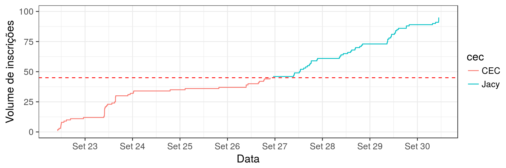
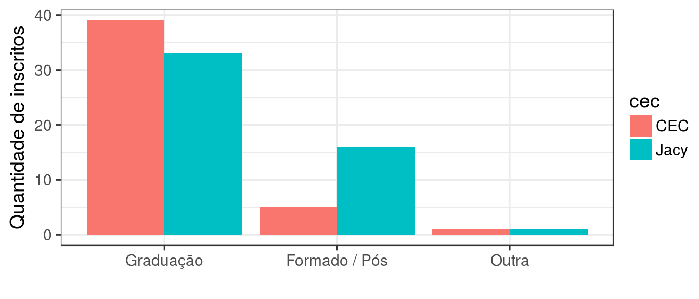
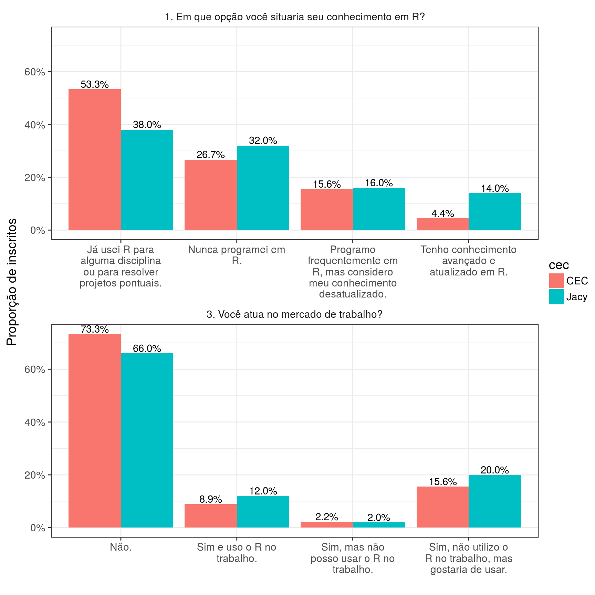
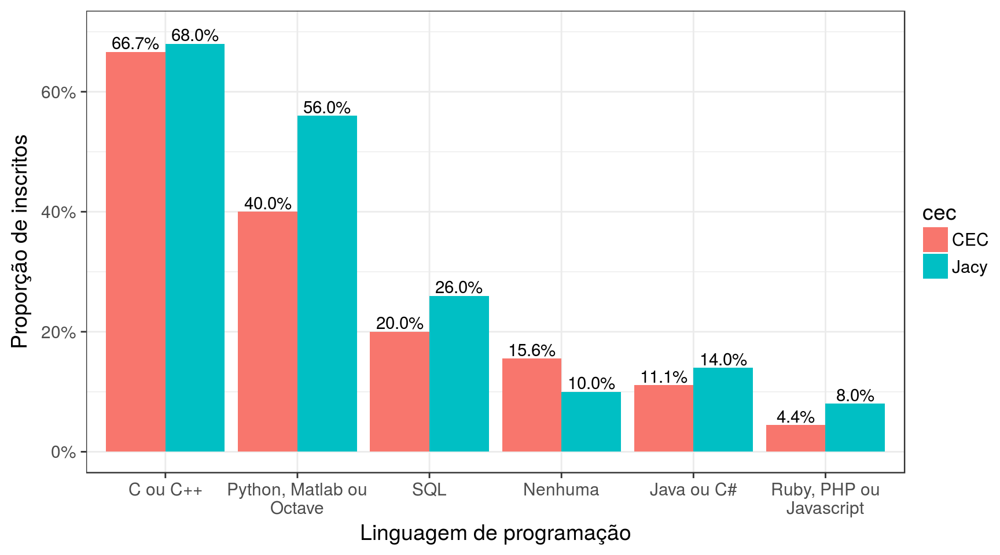

3. Análise exploratória: inscritos no curso
library(magrittr)
library(tidyverse)
library(stringr)
library(lubridate)
library(forcats)3.1 Objetivos
- Verificar a bagagem dos alunos.
- Verificar se há concentração de inscritos da graduação.
- Verificar se há diferenças entre a turma do CEC e do Jacy.
3.2 Base de dados
d_alunos <- read_csv('data/lista_anon.csv')
glimpse(d_alunos)## Observations: 95
## Variables: 7
## $ Timestamp <chr> ...
## $ Universidade: <chr> ...
## $ Estou no(a): <chr> ...
## $ Curso: <chr> ...
## $ 1. Em que opção você situaria seu conhecimento em R? <chr> ...
## $ 2. Você considera ter conhecimento intermediário/avançado em quais linguagens abaixo? <chr> ...
## $ 3. Você atua no mercado de trabalho? <chr> ...3.3 Data tidying
d_alunos %<>%
mutate(Timestamp = mdy_hms(Timestamp)) %>%
rownames_to_column('id_pessoa') %>%
mutate(cec = id_pessoa %in% as.character(1:45)) %>%
gather(pergunta, resposta, matches('^[0-9]')) %>%
renomear() %>%
spread(pergunta, resposta) %>%
mutate(uni = with(., case_when(
str_detect(universidade, re_usp) ~ 'USP',
str_detect(universidade, re_ufscar) ~ 'UFSCar',
str_detect(universidade, re_unip) ~ 'UNIP',
TRUE ~ 'Outra'
))) %>%
mutate(esc = with(., case_when(
str_detect(estou_no_a, 'raduado|formado|Mestrado|Pós') ~ 'Formado / Pós',
str_detect(estou_no_a, 'Graduação') ~ 'Graduação',
TRUE ~ 'Outra'
))) %>%
mutate(ime = str_detect(universidade, re_ime),
cec = if_else(cec, 'CEC', 'Jacy'))3.4 Alguns gráficos
Volume de inscrições no tempo
d_alunos %>%
arrange(timestamp) %>%
mutate(um = 1, inscricoes = cumsum(um)) %>%
ggplot(aes(x = timestamp, y = inscricoes, colour = cec)) +
geom_step() +
geom_hline(yintercept = 45, colour = 'red', linetype = 2) +
scale_x_datetime(breaks = scales::date_breaks('1 day'),
labels = scales::date_format('%b %d')) +
scale_y_continuous(breaks = 0:4 * 25, limits = c(0, 100)) +
theme_bw(14) +
xlab('Data') +
ylab('Volume de inscrições')
Escolaridade dos inscritos
d_alunos %>%
replace_na(list(esc = 'Outra')) %>%
mutate(esc = fct_infreq(esc)) %>%
ggplot(aes(x = esc, fill = cec)) +
geom_bar(position = 'dodge') +
theme_bw(14) +
xlab('') +
ylab('Quantidade de inscritos')
Perguntas 1 e 3: sobre utilização do R.
d_alunos %>%
gather(questao, resposta, matches('^[13]')) %>%
replace_na(list(resposta = 'Não.')) %>%
count(cec, questao, resposta) %>%
mutate(prop = n / sum(n)) %>%
ggplot(aes(x = str_wrap(resposta, 20), fill = cec, y = prop)) +
geom_bar(position = 'dodge', stat = 'identity') +
facet_wrap(~questao, scales = 'free_x', ncol = 1) +
scale_y_continuous(labels = scales::percent) +
geom_text(aes(label = scales::percent(prop), group = cec),
position = position_dodge(.9), vjust = -.2) +
theme_bw(14) +
theme(strip.background = element_blank()) +
xlab('') +
ylab('Proporção de inscritos')
Pergunta 2: sobre conhecimento em outras linguagens. Não soma 100%!
d_alunos %>%
gather(questao, resposta, matches('^[2]')) %>%
replace_na(list(resposta = 'Nenhuma')) %>%
mutate(ling = str_split(resposta, '\\., ')) %>%
unnest(ling) %>%
mutate(ling = str_replace(ling, '\\.$', '')) %>%
group_by(cec) %>%
mutate(ntot = n_distinct(id_pessoa)) %>%
group_by(cec, ling) %>%
summarise(n = n_distinct(id_pessoa), ntot = first(ntot)) %>%
mutate(prop = n / ntot) %>%
mutate(ling = str_wrap(ling, 20) %>% fct_reorder(prop, .desc = TRUE)) %>%
ggplot(aes(x = ling, fill = cec, y = prop)) +
geom_bar(position = 'dodge', stat = 'identity') +
scale_y_continuous(labels = scales::percent, limits = c(0, .7)) +
geom_text(aes(label = scales::percent(prop), group = cec),
position = position_dodge(.9), vjust = -.2) +
theme_bw(14) +
xlab('Linguagem de programação') +
ylab('Proporção de inscritos')